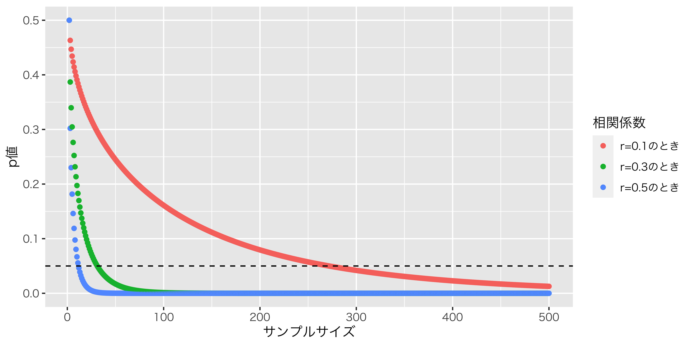
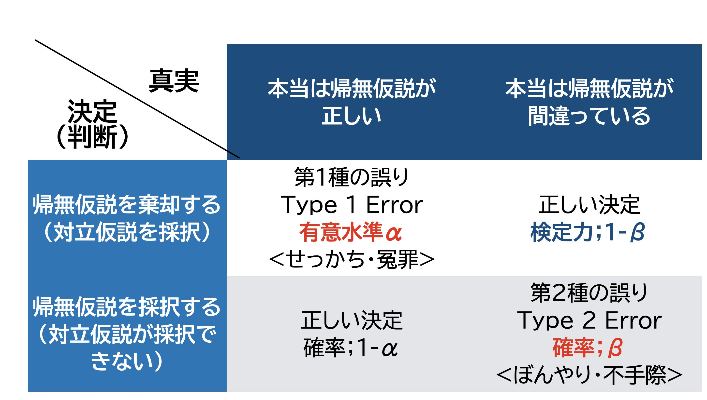
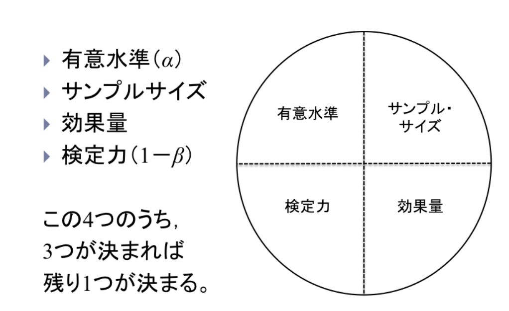

Chapter 11 帰無仮説検定の注意点
さて前回は帰無仮説検定について説明しましたが，いかがだったでしょうか。 まず「関係がない」「差がない」といったをおき，本来主張したいことをとし，帰無仮説の否定をもって対立仮設の採択とする，という背理法のロジックで結論を導き出しますから，少しひねくれた考え方になっていることに注意が必要です。手元に得られたデータが，帰無仮説の下では滅多に生じ得ないことだということでもって，帰無仮説を棄却するということも理解していただいておりますでしょうか。
今回は，この帰無仮説検定を行った結果を，どのように報告し，どのように解釈するのかについての解説を行います。とくに解釈の仕方については注意が必要で，少し触れたように帰無仮説検定は誤用・誤解が多いことも指摘されています。筆者の考えでは，背理法というひねくれた考え方と，基準となる確率の考え方が不自然であることに根本的な原因があり，初学者には帰無仮説検定は向いてないのではないかとさえ思います。それでもその手軽さから広く浸透した手法ですから，皆さんが先行研究などで触れる過去の論文の中にも間違えた使い方，間違った解釈をしているものが含まれているかもしれません63。皆さんが同じ過ちを犯さないように，しっかりと基礎知識を身につけ，安易で誤った答えに飛びつかないようにしてください。
まずは帰無仮説検定の結果報告の仕方について，次のセクションで少し解説していきます。
11.1 結果の報告の仕方
帰無仮説検定は帰無仮説と対立仮説のモデル対決なので，結果は軍配をはっきり示す必要があります。帰無仮説が勝ったのか，対立仮説が勝ったのかを明記するのです。ちなみに仮説が勝った，というのを，負けたというのをと言うのでした。ですから「帰無仮説を棄却して対立仮説を採択」，あるいは「帰無仮説が棄却できずに採択，対立仮説を棄却」のどちらかになります。
また，結果の判定ですから，判定に使った数字＝検定統計量も報告する必要があります。たとえば相関係数の検定の例では，\(t\)統計量が使われましたので，これを報告します。また，\(t\)統計量は\(t\)分布に従い，これはサンプルサイズに依存する自由度によって調整されるものですから，自由度も報告する必要があります。前回の例では，相関係数\(r=0.50\)がサンプルサイズ20のデータから得られ，統計的に優位であると結論づけられたのでした。この結果は，次のように報告しましょう。
標本から得られた標本相関係数\(r=0.50\)について仮説検定を行ったところ，\(t(18)=2.450,p=0.0248\)で統計的に有意であった。
書き方のポイントとしては，統計量を書くこと，そしてその時の統計量はイタリック(斜体)であること64，その統計量の実現値が得られる確率(\(p\)値)を記載すること，です。
\(p\)値は上の例のように確率そのものを描くのが基本ですが，昔は判定基準を使って\(p<0.05\)とか\(p<0.01\)と書いていました。これは手計算で検定をしていた頃の名残で，統計環境Rなどがなかったものですから確率計算が直接できませんでした。ではどうしていたか，というと代表的な確率分布の数字が載っている数表65を使ってチェックするしかなかったので，細かい数字まで計算できなかったのです66。今ではそういう問題がないので，そのまま\(p\)値を書きましょう。
11.2 統計的に有意とは
さてここまで，(ひとつの)平均値の検定や，相関係数の検定を行なってきました。 想定された平均値と大きく違っている/いない，とか，母集団での相関関係がある/ない，という事例でしたが，最終的には帰無仮説を棄却する/採択する，という話になるのでした。
この時，帰無仮説が棄却できると「統計的に有意statistically significant」というのでした。統計的に意味が有る，というわけです。ただし気をつけて欲しいのは，統計的に有意とはどういうことか，です。 相関係数の検定の時のことを思い出しましょう。帰無仮説は\(\rho=0\)というものでした。これが棄却されたので，「統計的に有意な相関係数だ」と結論づけたわけですが，より正しくは「母相関が0であるとはいえない」ということですよね。関係がないとは言えない\(\to\)関係がある，というこの\(\to\)の部分は，厳密に言えば少し飛躍があることになります67。
この帰無仮説検定を考えた人は，R.A.フィッシャーという人なのですが，この人は帰無仮説が棄却されたら「なにかおかしなことが現実に起こっているのだから，実験手続きを見直したほうがいい」というチェックのために使うことが想定していました。これをE.ピアソンとJ.ネイマンという人が「帰無仮説の棄却＝対立仮説の採択，とすれば良い」という判断基準と合わせて使う方法への応用したのです。心理学ではその流れを受けて帰無仮説検定を利用してきました。そういう意味で，本来の創始者の意図とは違った，より実践的な意味のある(言い換えれば実用上の責任を負わなければならない)使い方をしているのです。
また既に述べたように，実際の相関係数の大きさや，平均値の差についての情報がかき消された表現になっていることにも注意が必要です。最終的な判断は\(p\)値だけを見るのですが，この数字だけみても相関係数の大きさや，平均値の差がどれぐらいあったのかはわかりません。有意になったという結果だけをみて，関係があったのか，そうかー，と考察を巡らせても，実は標本相関係数が\(r=0.1\)だったということもありえるのです68。これで「統計的に有意だ！無相関とは言えない！」と言っても，標本相関係数が0.1なのですから，「(相関)関係がある」という結果をもとに議論するとおかしなことになってしまいます。
ところが実際，このような表面上の使われ方に引っ張られてしまうことはよくあります。とくに研究をしていると，努力したのに関係がなかったとは言いたくないという気持ちが働いてしまいます。そこで，有意になったんだから意味はあるよね，と考えて無理やり二変数間の関係を考察してしまう，ということになってしまいます。これではせっかくデータを取ったのに，正しく考えられたことになりません。
一般にサンプルサイズが大きいと，\(p\)値は小さくできますから，帰無仮説は棄却しやすくなります。図1.3には，横軸にサンプルサイズ，縦軸に\(p\)値をとり，標本相関係数が\(r=0.5,0.3,0.1\)のときにどうなるかをプロットしました。5%を有意水準(点線)としていますが，サンプルサイズが大きくなるにつれて\(p\)値は小さくなって行きます。

サンプルサイズと\(p\)値の関係
この下がり方はどこからスタートするかにかかわらず同じ形ですから，判定はサンプルサイズが増えさえすればいずれ有意になるのです。これがまた，研究の実践ではおかしな風潮を呼んでしまいます。つまり，有意にしたければサンプルサイズをたくさん取る＝頑張れば良いのです。
しかしながら，科学的に正しいかどうかを考えるべきシーンで，「頑張れば有意になる」といった”努力”に依存するのはおかしいことだと思いませんか。頑張った\(\to\)有意になった\(\to\)著者の主張が正しい，というのは，論理的ではありません。結果を自分の都合の良いように変えることは，正しい努力ではないはずです。
帰無仮説検定は，標本から母集団のことを「判定」できる優れた技術ですが，表現とその解釈に気をつけないと，科学を間違った方向に導きかねないことに注意が必要です。残念ながら，これまでの心理学の歴史の中でもこのような間違った努力がなされてきた事実があります。これらは，すなわちと言われています。たとえば「有意な結果にするために」サンプルサイズを増やすとか，「有意な結果になるまで」検定を繰り返す，といったことこれに当たります。そうした研究実践が実際に行われている現場も少なくないようです。しかしそんなことをしていると，必然的に科学の議論が「正しくない結果(の解釈)」に基づきますから，後続の研究が土台から崩れ，長年の努力が無駄になってしまいます。データの捏造や，他人の書いた論文を盗む剽窃は明らかに悪意のある行為ですが，「頑張ってデータを増やす」というのは一見真面目で誠実な研究態度に思えてしまうので，ちょっとタチが悪い問題です。努力が人を誤らせるのですから。皆さんも騙されたり間違った道に進んでしまわないよう，十分に注意して研究を進めてください。
11.3 検定における2種類の間違い
11.3.1 \(p\)値とは何か
ところで，帰無仮説検定は「推定」の応用である「判断」だということでした。判断が確率的に行われるのですが，人間は確率的な考え方が得意ではありませんから，うっかり間違って理解してしまうことも少なくありません。正しい判断，間違った判断というのはどういうときに起こるのかを考えてみましょう。
まず先ほどから\(p\)値と呼ばれる数字を使って説明してきましたが，改めてこの\(p\)値は何を表している数字でしょうか？ 次の選択肢の中から考えてみてください。
帰無仮説の成立する確率
帰無仮説の正しさを表している数字
-
有意の程度の強さを表している数字(\(p\)値が小さければ小さいほど効果が大きい)
検定の強さを表している数字
実は正解は，上のどれでもない，です。意地の悪い選択肢でごめん。
上の2つの選択肢，「帰無仮説の生じる確率」「帰無仮説の正しさを表している数字」はよくある勘違いです。 仮説検定は「帰無仮説の下で・・・」という前提から始まります。無相関検定のときに，母相関が0の世界から標本をピックアップする例をお話ししましたね。母相関の世界を前提として・・・という話なので，帰無仮説の生じる確率は100%，帰無仮説の正しさも100%です(だって仮定したんだから！)。
有意の程度の大きさを表す数字でもありません。確かに差が大きいとか，帰無仮説の世界から大きく離れているというようなことがあれば，検定統計量の実現値は大きくなり，\(p\)値は小さくなります。が，\(p\)値が示しているのは(帰無仮説の下での)検定統計量の出現確率に過ぎません。いわば帰無仮説という仮想空間の中での数字であって，現実の統計量について何か示す数字ではないのです。
検定の強さを表す数字，でもありません。\(p\)値が小さくなればなるほど，確かにレア度は増しているのですが，それは帰無仮説という仮想空間の中でのレア度であって，帰無仮説が対立仮説をどれほど打ち負かしたか，という情報を持っているわけではありません。ですから，\(p\)値が小さければ小さいほどすごい，などと思ってしまうと本質を見誤ります。
では検定の正しさや間違いについて，どのように考えれば良いのでしょうか。実はこれも，確率的表現の難しさがあるのです。 帰無仮説検定最後のステップでは「最初に定めた仮説が間違っているか正しいかを判断する」というのがありました。この判断の間違い方にも，2種類あるのです。つまり，「帰無仮説が正しいのに棄却してしまう」という間違い方と，「帰無仮説が正しくないのに採択してしまう」という間違い方です。

二種類の間違い方
図1.2に，間違い方の組み合わせを書いてみました。帰無仮説が正しいときに帰無仮説を採択する，帰無仮説が正しくないので帰無仮説を棄却する。これができれば正しい決定ですが，「帰無仮説が正しいのに帰無仮説を棄却する」のも「帰無仮説が正しくないのに帰無仮説を採択する」のも間違いです。
帰無仮説は差がないとか効果がない，といったNullな結論です。ここでは仮に，開発された新薬に治療効果があるかどうかを考えている，というシーンを想像してみてください。帰無仮説はこの新薬に効果がないときです。ロクな効果がないときに，帰無仮説を棄却する＝対立仮説を採択する＝効果があると言ってしまうのは，怖いことですね(患者さんに副作用など悪影響があるかも！)。このような功を焦って誤った判断をしてしまう危険な間違いを，とよび，その確率を\(\alpha\)で表します。実は，5%水準で判断するというのは，この\(\alpha\)の確率を0.05にしたことになります。慣例では\(\alpha=0.05\)となっていますが，別に1%でも10%でも，自由に決定して構いません。どの程度の水準にするかは，この間違いを犯した時の重要さを参照しながら決めるべきことです。
一方，効果があるのに（帰無仮説が間違ってるのに)，帰無仮説を採択するのは，せっかくの効果を見抜けなかった残念なケースです。これも困った結果ではありますが，少なくとも患者に迷惑がかかるようなことはありませんよね。なので，こちらについてはひとまず間違っても実際的な問題は生じないでしょう。こちらのケースはと呼び，確率は\(\beta\)で表すのが一般的です。ただ，この\(\beta\)は帰無仮説が間違っている，つまりNull「でない」状態が，どう「である」のかわからないので，大きさを見積もることはできません。せめて，効果があるときはちゃんとあるって知りたいよね，と思いを馳せるだけです。この図1.2にある表は，列ごとに世界線が分かれていますから，右列の「帰無仮説が間違っている世界」で「帰無仮説を棄却してしまう確率」が\(\beta\)であれば，ちゃんと効果を見つけ出せる確率は\(1-\beta\)です。この\(1-\beta\)をといい，検定力のある分析ができているかどうかをちゃんとチェックしておくのは，研究の手続き上重要なことです。
11.3.2 \(\alpha\)のインフレ
先ほど，5%水準というは\(\alpha\)を設定したことと同義だという話をしました。つまり効果がないのに効果があると言ってしまう，うっかりミスを防いでおこうという方針で判断基準を設計しておきましょうということです。 それを踏まえた上で，次のような話を考えてみてください69。
あるレストランの地下にはたくさんのワインが貯蔵されているが，20本に1本は酸っぱくなった不良品が混じっている。客がやってきて1本のワインを注文する時，ソムリエは長い目で見て20回に1回冷や汗をかくことになる。 このレストランで開かれるパーティには10本単位でワインを出すことになっているが，1本でも酸っぱいワインが入っていたらパーティはダメになってしまう。パーティーのときは，ソムリエはどれほど謝らなければならないか？
何だか怪しいレストラン，いかがわしいソムリエですね。こんな店が実在していたら行きたくないですが，もちろんこれは架空の話で，20本に1本のダメなワインがあるというのは，帰無仮説検定における5%の有意水準のメタファーになっています。 つまり，5%の判断ミスが生じる危険性がある，ということですね。 うっかりミスの水準を5%にしているのは，言い換えると95%の高確率で判断があっているのですから，ほとんどの場合は問題ないとも言えます。このレストランでは20回に1回しかミスはない，というわけです。
ところがパーティーが開かれると，ワインがまとめてどっさり提供されるのでした。一回のパーティで10本のワインが出るんでしたね。 ひとまず2本のワインを持ってきたとします。危険率は5%，安全率は95%ですが，これは一本あたりの話です。2本連続で安全である確率は，\(0.95\times 0.95=0.9025\)になります。言い換えると，どちらか一本がアウトである確率は\(1-0.9025=0.0975\)で，なんとほとんど10%ではありませんか。
同じように考えて，10本まとめて持ってくると，その中のどれか一本でも間違っている確率は，\(1-(0.95)^{10}=0.4013\)ということになります。40%ですね。 つまり10本まとめて持ってくると，一本ずつだと5%だった危険率が40%に跳ね上がっていることがわかります。
話を心理学の世界に戻しましょう。心理学では実験の結果を検証するときに，5%の危険率で判断するのでした。 さて，とある熱心な研究者がある現象について様々な角度から研究し，何度も統計的な検定を重ねて結論を導き出そうとしているとします。その研究者はとても熱心で慎重なので，一つの研究のなかに10種類の実験を考え，10回それぞれ5%水準で帰無仮説検定を行い，丁寧に判断を繰り返して全て有意な効果が得られたとします。これは頑健な結果だ，一連の研究はうまくいったぞ・・・といえるでしょうか。
実はそうならないのです。先程のワインの話のように。つまり一つの研究で10回検定を行うと，たまたまどこかで有意になる(差がないのに差があるように判断してしまう)可能性が40%に膨れ上がっています。 つまり，一連の研究で5%の危険率を維持しようとするなら，たとえば10回の検定が含まれるのであれば，それぞれの有意水準はせめて0.5%にしておかなければなりません。さもないと，うっかりミスの確率がインフレしてしまうのです。
これも悲しいかな，努力が裏目に出てしまう可能性ですね。一見，一つの論文で複数回の実験や検定を行なっているのは，慎重で真面目であり，有意な結果が出ればそれは十分強い証拠だ，と考えてしまいます。しかしこれはあくまでも0/1の判断であり，しかも確率的な判断ですから，間違いの評価の仕方も確率の理論に沿って丁寧に考えねばなりません！
実際ひとつの論文の中に複数回の検定が行われていることは，少なくありません。しかしその中で，\(\alpha\)水準の全体的な調整がなされていることはあまり見かけません。そう，多くの研究者は気づいていながら間違った研究実践をしているのです。「みんな間違っていてみんないい」とはならないのでして，こうした状況は一刻も早く修正する必要がありますが，なぜかなかなか浸透しないところでもあります。本来は，一つの論文全体で調整をかけるべきなのですが・・・。 こうした誤りに振り回されないようにするには，「差がある/ない」といった1bit判断にするのではなく，「どの程度の」差が見られたのか，その効果の大きさをしっかり見極める目が必要になってきます。
11.4 効果量と例数設計
検定力のチェックは，分析が終わった後に事後的にすることもできますし，事前にすることもできます。事前に，というのは，みたい効果がどの程度あるのかを考え，その効果をきちんと検出するにはサンプルサイズをどれぐらいにすれば良いのかを考えること，でもあります。このサンプルサイズを考えることを，といいます。
帰無仮説検定において，例数設計はとても大事なことです。既に述べたように，サンプルサイズが大きくなると有意だという判断はしやすくなります。これは\(p\)値で判断する以上仕方のないことですが，だからと言ってそれを逆手にとって，事実よりも主張をするためにサンプルをたくさんとるのは，帰無仮説検定のハッキングのようなものです70。ですので，検定をするときはまず「どの程度の効果が見込まれ，これを検証するためには何人ぐらいのサンプルをとらなければならない」と宣言してから，検定して判断するという手続きが必要です。この宣言をせずに検定をすると，「有意にするためにサンプルサイズを変えたのではないか」と批判されてしまうかもしれません。学部の授業や卒論で行う実験で，例数設計をしたりサンプルサイズの宣言をするようなことはないかもしれませんが，学術業界では事前に学会にこの宣言を伝えてから研究に取り掛かる，事前登録制pre-registrationが導入されはじめています。
ここで，検定の判定結果に関係してくる要素を改めてみて思い出してみましょう。一つはもちろんですね。これは判定を決める基準ですから，これが緩いと対立仮説の勝ち！という結果が出やすいことになります。 二つ目はですね。サイズが大きければ区間推定の幅は狭くなりますから，たくさんデータをとれば取るほど対立仮説の勝ち！という結果が出やすいことになります。ここまではお分かりいただけていると思います。 続いて三つ目は，です。平均値差の検定の場合を例に簡単に言えば，群間の差の大きさのことです。母集団において本当に平均値の差が大きければ大きいほど，対立仮説の勝ち！という結果が出やすいことになります。これは当然ですよね。ただ，効果量を一般的にいうと標準化された差という言い方をします。100点満点のテストで1点の差がある場合と，1000点満点のテストで1点の差がある場合は同列に考えることができないですから，標準偏差で割ることで「標準偏差何個分離れているか」という表現にするのです。標本から推定する効果量としては，とが有名です。Cohensのdは次のようにして計算します。
\[d = \frac{\bar{X}_1-\bar{X}_2}{\hat{\sigma}}\]
ここで分母の標準偏差は，2群で同じであれば問題ないですが，異なる場合は\(\hat{\sigma} = \sqrt{\frac{\sigma_1^2+\sigma_2^2}{2}}\)として合わせて計算します。 いずれにせよ，「本当に差が大きければ対立仮説が採択される」というのは当然そうあって欲しい性質ですから，これもお認めいただきやすいと思います。
そして最後にもう一つ。先ほどの二種類の間違いのうち，本当に差がある場合に正しく検出できる程度，つまりが考えられるということでした。うっかりミスであるを犯す確率が\(\beta\)ですから，検定力は\(1-\beta\)です。これも大きければ大きいほど，正しく対立仮説を採択することができます。

統計的検定における四つの要素の関係
このように，帰無仮説検定において判定に関係してくるのは有意水準，サンプルサイズ，効果量，検定力の四つであり，これらのうち3つが決まると残りの一つの要素は計算で決まります(水本 and 竹内 2011)。また有意水準\(\alpha\)は一般に5%を使いますし，検定力\(1-\beta\)も0.8ぐらいにするのがよい，というのが通例になっています。であれば，効果量に応じてサンプルサイズを決めることができるわけです。小さな効果しかなさそうなものであればサンプルサイズはたくさん必要ですし，逆もまた真です。ただ，「サンプルサイズは大いに越したことないだろう」というのは間違いで，極わずかな違いも検出してしまうことになるからです。 もっとも，研究を始める前に効果量がどれぐらいなのかを事前に知るのは難しいところです。効果がどの程度あるかがわからないので，研究しようというシーンが多いでしょう。それでも先行研究があれば，そこにはすでにサンプルサイズも，実際のデータによる効果量も計算できるわけですから，効果量がどれくらいある研究なのかを計算することは可能です。
研究を行う前に，事前にこれらの計算をすることをと言います。検定力分析は，をするためにも行われる場合と，研究後にどれぐらい効果量があったのかを調べる場合の二種類があります。またこうした計算をするための統計パッケージやRの関数などがありますので，実際はこれらを使って計算することになります。
11.5 課題
11.5.0.0.1 検定結果の解釈0
帰無仮説を\(\rho=0.0\)とし，標本相関係数\(r=0.45\)が有意であるかどうかを5%水準で検定したところ，対立仮説が採択されました。結果の解釈として，次の文が正しいかどうか判断しましょう。
-
母集団において\(\rho\neq 0\)であることが証明された。
-
母集団において\(\rho=0\)である確率は5%以下である。
-
母集団において\(\rho\)は0より大きな値である。
-
母集団において\(\rho=0.45\)である。
-
母集団において\(\rho=0\)であるとするならば，\(|r|>0.45\)という値が得られる確率は5%以下である。
11.5.0.0.2 有意水準とサンプルサイズ
次の文章それぞれについて，正しいか間違っているかを判断しましょう。
-
他の条件が一定なら，有意水準が小さくなると有意になりにくくなる。
-
他の条件が一定なら，有意水準が小さくなると第二種の誤りを犯す確率が大きくなる。
-
他の条件が一定なら，サンプルサイズが大きくなると有意になりやすくなる。
-
他の条件が一定なら，サンプルサイズが大きくなると帰無仮説を棄却するときの理論的な統計量の絶対値が大きくなる。
11.5.0.0.3 \(p\)値の性質と意味
次の文章それぞれについて，正しいか間違っているかを判断しましょう。
-
p値が小さいとき，母集団における効果は大きい。
-
p値が小さいとき，帰無仮説が正しい確率は小さい。
p値が小さいとき，有意水準は小さい。
p値はデータから計算される統計量である。
11.5.0.0.4 検定力分析
次の文章それぞれについて，正しいか間違っているかを判断しましょう。
-
他の条件が一定なら，サンプルサイズが大きくなると検定力も大きくなる。
-
検定力が0.6であるとすると，効果を見逃す確率が0.4あることを意味する。
-
検定力を求めるには，検出したい効果の大きさを仮定する必要がある。
-
検定力とは標本統計量が，未知母数の値と一致する確率である。
References
-
もう1つは「説明する」です。↩︎
-
なんで\(b\)なんだ\(a\)でもいいじゃないか，と言われたら返す言葉もないのですが，慣例的に\(b\)で係数を表しています。ちなみに今はアルファベットの\(b\)ですが，後期になると\(b\)のギリシア文字\(\beta\)に変わります。ギリシア文字で表現するのは推測統計学的な推定に関わるようになってからです。↩︎
-
親の身長から子供の身長を予測することを考えてみてください。次にその子が親になって，その子がまた親になって・・・という時に，「背の高い親からは背の高い子しかうまれない」というルールであれば，世界はものすごく高身長なひとと低身長な人に二分されてしまいます。そうではないということは，背の高い親から背の低い子が生まれることもあるし，その逆もあるということです。また野球選手などでルーキーのときは成績がいいのに，2年目になったら成績が下がる，というのは2年目のジンクスなどといわれますが，その人の平均的な能力以上のスコアが出た次の年に，平均的な値に帰るために低くなりがちなことは，当然ありえることでもあるのです。こうした効果のことを回帰効果といいます。↩︎
-
細かい計算式については，(kosugi2018のPp.133をみてください?)。↩︎
-
指数についてこれまで習ったことを思い出してください。\(a\neq 0\)のとき，\(a^0=1\)ですし，\(a^{-n}=\frac{1}{a^2}\)と定義するのでした。↩︎
-
こういうの見ると，「あ，ずるい。著者め逃げたな」と思いませんか。私なら思います。そう思われると悔しいので，参考図書として@西内201712をあげておきます。また@長沼201611のP.62–69も参考になります。↩︎
-
\(\pi\)は3.141592...という実数です。円周率ですね。面積になぜ円周率が出てくるのか，それがガウスの凄いところです。↩︎
-
とくに文系には！私も文系出身ですので，最初に習った頃は「うん，わからん！」となりました。↩︎